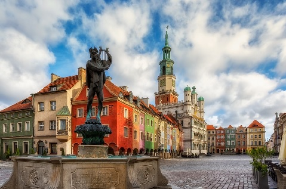

Stolica województwa mazowieckiego i Polski jest miastem niezwykłym, położonym w środku Europy, na przecięciu szlaków komunikacyjnych z zachodu na wschód i z północy na południe kontynentu, to bardzo ważny ośrodek gospodarki, nauki, kultury i turystyki naszego kraju z bogactwem zabytków i atrakcji turystycznych...
14 polubień 32 komentarzy
Kraków
Stolica województwa małopolskiego jest jednym z najstarszych miast i perełką narodowego dziedzictwa kultury; w przeszłości pełnił funkcję stolicy państwa i siedziby królów; obecnie to rozległe miasto, położone nad królową polskich rzek – Wisłą; odwiedzane jest przez licznych turystów z całego świata...
10 polubień 90 komentarzy
Łódź
Stolica województwa łódzkiego to miasto niezwykłe, gdzie historia i nowoczesność tworzą jedną płaszczyznę, idealnie harmonizując z zabytkami i atrakcjami dla turystów.Z ilu stopni skakał Polański? Czy diabeł ubiera się tylko u Prady? Gdzie są najciekawsze murale? – turysta znajdzie odpowiedzi nie tylko na te pytania...
31 polubień 52 komentarzy
Wrocław
Stolica województwa dolnośląskiego, z wielowiekową historią, mającą wpływ na mnogość występujących tu zabytków, stanowi najważniejszy ośrodek kulturalny, ekonomiczny, akademicki i turystyczny południowo-zachodniej Polski; miasto niezwykle bogate w atrakcje dla każdego turysty...
36 polubień 20 komentarzy

Poznań
Stolica województwa wielkopolskiego jest ważnym centrum gospodarczym, handlowym, naukowym, kulturalnym i turystycznym zachodniej Polski; tutaj znajduje się najważniejszy ośrodek targowy w kraju...
39 polubień 17 komentarzy
Gdańsk
Stolica województwa pomorskiego, która wraz z Gdynią i Sopotem tworzy Trójmiasto, łącząc w sobie bogatą historię i atrakcyjną nowoczesność; miasto portowe zlokalizowane nad Zatoka Gdańską...
32 polubień 18 komentarzy
Szczecin
Stolica województwa zachodniopomorskiego jest dużym miastem portowym, położonym przy ujściu rzeki Odry do Zalewu Szczecińskiego.Trzy główne, gwiaździste place miasta wzorowane są na planie tych w stolicy Francji...
35 polubień 21 komentarzy
Bydgoszcz
To połączenie Amsterdamu z Wenecją. Uporządkowaną architekturę Bydgoszczy wyróżniają przede wszystkim piękne kamienice. Miasto zadziwia bogactwem secesyjnej, eklektycznej i neobarokowej zabudowy oraz przyjaznymi terenami zieleni...
60 polubień 16 komentarzy
Lublin
Stolica województwa lubelskiego, która zachęca turystów swoją historią poprzez muzea, zabytki, tradycyjne smaki oraz legendy ukryte w uliczkach, zaułkach i murach kamienic. Trzeba się zgodzić z hasłem, że Lublin jest miastem inspiracji...
23 polubień 13 komentarzy
Białystok
Stolica województwa podlaskiego łącząca w sobie piękno sztuki i natury, stanowi ważny ośrodek kulturalny, akademicki i turystyczny w północno-wschodniej Polsce.Wielokulturowy folklor, murale, zachęcają do odwiedzenia stolicy województwa podlaskiego...